はじめに
インストール＞サンプルシミュレーションの所で、サンプルプロジェクト(SampleRobotPD.xml)をロードしてOpenHRP3の動作確認を行いました。
OpenHRP3を利用するためには、ロボットモデルとコントローラを作成する必要がありますが、今回はSampleRobotPD.xmlと同様に、 GrxUIの起動Linux環境の場合
以下のコマンドでGrxUIを起動します。 $ cd (OPENHRPをインストールしたディレクトリ)/bin/unix $ ./GrxUI.shまたはファイルブラウザなどのGUIを使用してもGrxUI.shを実行できます。 Windows環境の場合
以下のコマンドでGrxUIを起動します。 >cd (OPENHRPをインストールしたディレクトリ)/bin/dos >GrxUI.batまたはエクスプローラなどのGUIを使用してもGrxUI.batを実行できます。
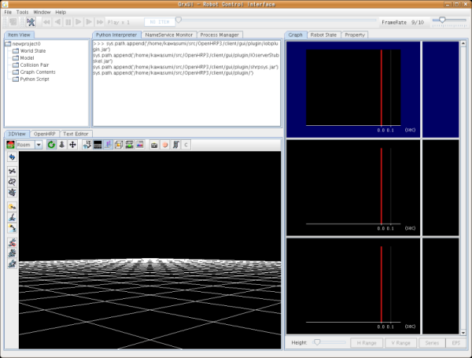 使用するモデルのロードと初期設定モデルのロードは、fig.2に示すようにItemView上で行います。
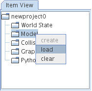
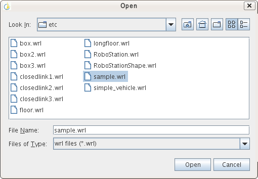 モデルアイテムを扱うViewには、ロボットモデルと環境モデルとを区別するものがあり、fig.3のようにItem Viewの右クリックメニューから変更します。
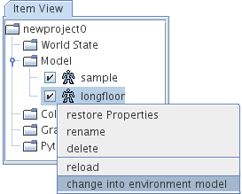
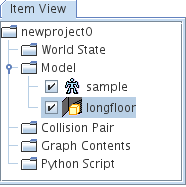 ロードしたモデルは3DView上に表示され、位置・姿勢、関節角度等を編集できるようになります。 編集した内容は、初期条件として各モデルのプロパティに設定されます。 編集中のモデルの関節角度は、RobotStateViewで確認する事ができます。
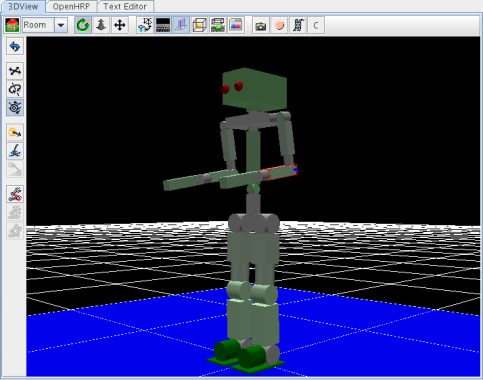
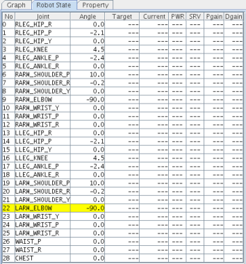 ここでは、PDcontrollerが読み込む動作ファイルの初期姿勢に設定します。左上図の関節角度を参考に設定して下さい。 なお、PropertyViewを利用する事で、数値を直接入力して編集することも可能です。 コントローラの設定
ロボットモデルがある場合は、OpenHRP/Controllerタブで、コントローラを関連付ける事ができます。
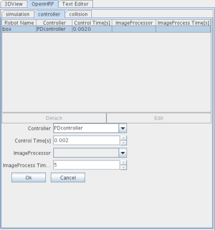 干渉チェックペアの設定
干渉チェックペアは、OpenHRP/Collisionタブにより編集します。
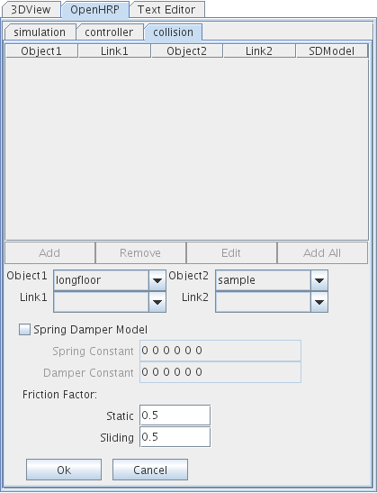
コンボボックスObject1とObject2でモデルを選択し、Link1とLink2で干渉チェックを行うリンクを特定します。
この例では、ロボットモデルsampleと環境モデルlongfloorの干渉チェックを設定します。 実行条件の設定OpenHRP/Simulationタブでシミュレーション時間等の設定を行います。設定内容がWorldStateアイテムに記録されるため、まずWorldStateアイテムを生成します。
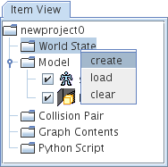
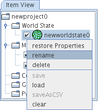
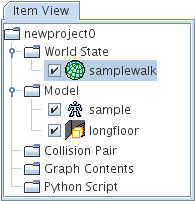 Sampleのコントローラは、あらかじめ生成された歩行パターンファイルを読み込んで、ロボットを駆動します。 そのパターンファイルの実行時間が13.4であるため、13.4を設定します。 Integration Step[s] 同じくパターンファイルのタイムステップが0.002[s]刻になっているため、ここでは0.002を設定します。 Loggin Step[s] Logging Stepの変更で、結果の記録によるファイルアクセスを減らす事ができますので、シミュレーション時間を短縮できます。 ここでは、Integration Stepと同じく0.002[s]に設定します。Integration Step以下に設定した場合は、Integration Stepと同じ値とみなされます。
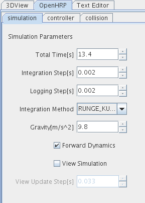
プロジェクトの保存ここまでに設定した各アイテムの状態は、プロジェクトファイルとして保存することができます。 メニューからFile->Save Projectを選択し保存します。
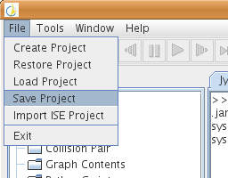
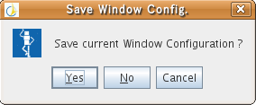 プロセスマネージャの設定サンプルプロジェクトSampleRobotPD.xmlには、シミュレーション開始時に自動的にOpenHRP3/bin/unix/PDController.shを実行するための記述が追加してあります。現時点では、この設定をGUIから行う事ができません。 従って、プロジェクト保存後、テキストエディタにて、プロジェクトを開き以下の行を追加して下さい。 <process id="PDcontroller" com="$(BIN_DIR)/PDController$(BIN_SFX)" dir="$(BIN_DIR)/" hasshutdown="true" autostart="false"/> 上記を追加後、この変更を有効にするために一度プロジェクトをLoadし直して下さい。 シミュレーションの開始下図赤枠のシミュレーション開始ボタンを押して下さい。このボタンを押した時点で、Item View上で選択状態にあるモデルアイテムやCollisionPairアイテムが、シミュレーション中有効になります。
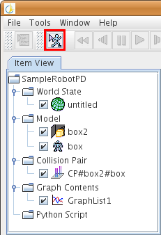 この時Controllerへの接続に成功するとシミュレーションが開始されます。 接続に失敗した場合、 1.もう少し待つ 2.Controllerなしでシミュレーションをスタートする 3.キャンセルする かを選択する下図のダイアログが現れます。
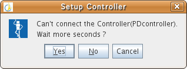 シミュレーションの中断・終了シミュレーション開始ボタン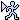は、 シミュレーション実行中、中断・終了ボタン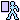に変わります。中断・終了ボタンを押すと、シミュレーションは一時中断し、終了してもよいかを問うダイアログが現れます。 このダイアログのOKボタンを押すと、シミュレーションは終了します。 プレイバック機能の利用シミュレーション結果は、画面上部にある再生・スロー再生・早送り・巻戻しボタン等を押す事でプレイバックできます。シミュレーション結果はWorldStateアイテムに記録されており、スライダの指す時刻のデータを、3DView、Graph、RobotStatといった各Viewが表示します。 グラフ機能グラフ表示する項目は、GraphContentsアイテムに記録されます。まずはItem View上でGraphContensアイテムを生成します。
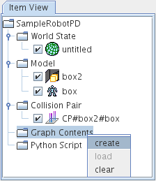
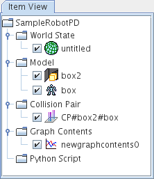 表示項目は、シミュレーション終了後でも選択する事が可能です。 登録した内容は、プレイバック時、もしくは次回のシミュレーション時に表示される事になります。
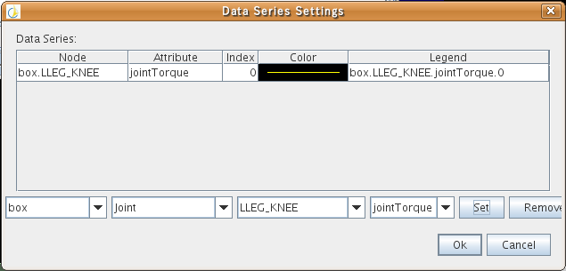 |